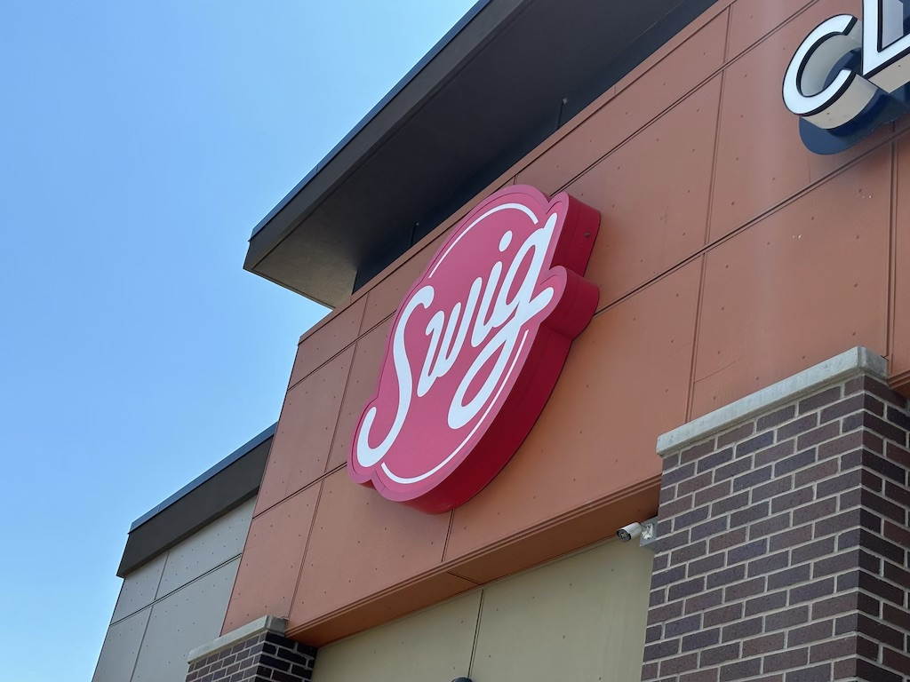
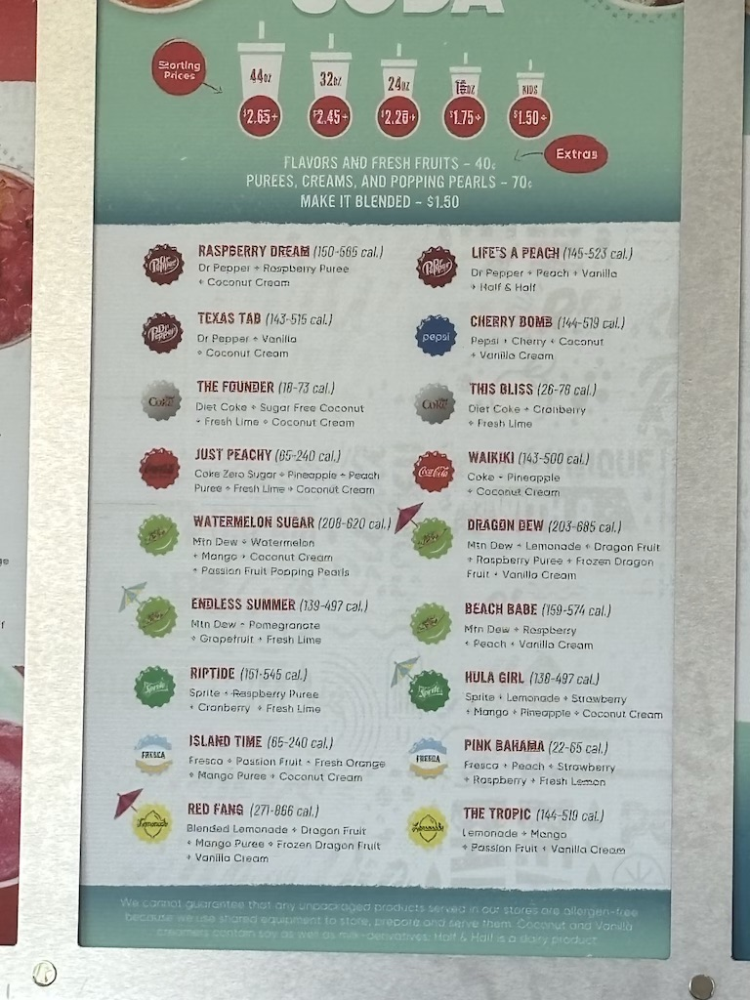
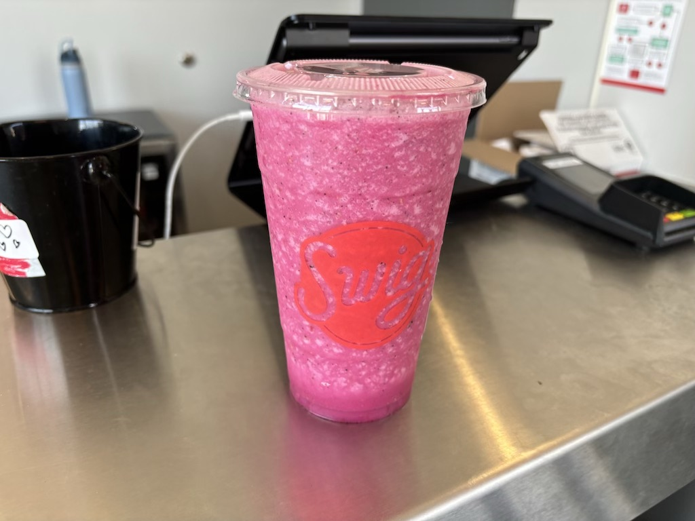

26th July 2024
I wanted to write a short piece on an interesting chain that my girlfriend and I tried on our way south through Utah. Swig is a soft drink smoothie chain that only exists in a select number of states. Founded in 2014 in St. George, Utah it is a drive-through soda-fountain chain. It is a chain with growing popularity with many coffee and alcohol abstainers; Some members of the Church of Jesus Christ of Latter-day Saints enjoy a Swig "Dirty Soda" as an alternative caffeine drink.
The menu was not cheap (not that anything is in the USA). A normal sized drink was approaching 10 dollars which for 5 or so ingredients in a normal sized plastic cup is far too much. I snapped a photo of the menu below - it's the kind that uses wacky nicknames that hint at what the drink will taste like. Pretty much every singe one had both a juice and a fizzy drink, with fresh fruit (arguably the only healthy think on the menu) costing extra.
I ordered a Strawberry Breeze. It may be the brightest shade of pink I've ever had in a drink. I'd be lying if I said this drink tasted bad, but my enjoyment is purely due to how sweet it was. I would not like to know what percentage of the recommended daily intake of sugar per day this was.
Another example of available food in the USA that is unnecessarily unhealthy. Why not just make smoothies with real fruit and energy drinks? It would be a lot less sugar than mixing coconut cream and major soft drink brands yet still provide caffeine where people want that. Needless to say I did not need much else to snack on in the car journey south. My girlfriend did not want one and I think she made the right call.
To summarize, Swig is a really unhealthy alternative to soda and energy drinks which is quite frankly impressive. Similar to how cigarettes make vapes look healthy, Swig makes Coca Cola look nutritious. If you have a sweet tooth feel free to try it, but don't have more than 1 a year.
Click here to head South into some more national parks with me. Otherwise return home.